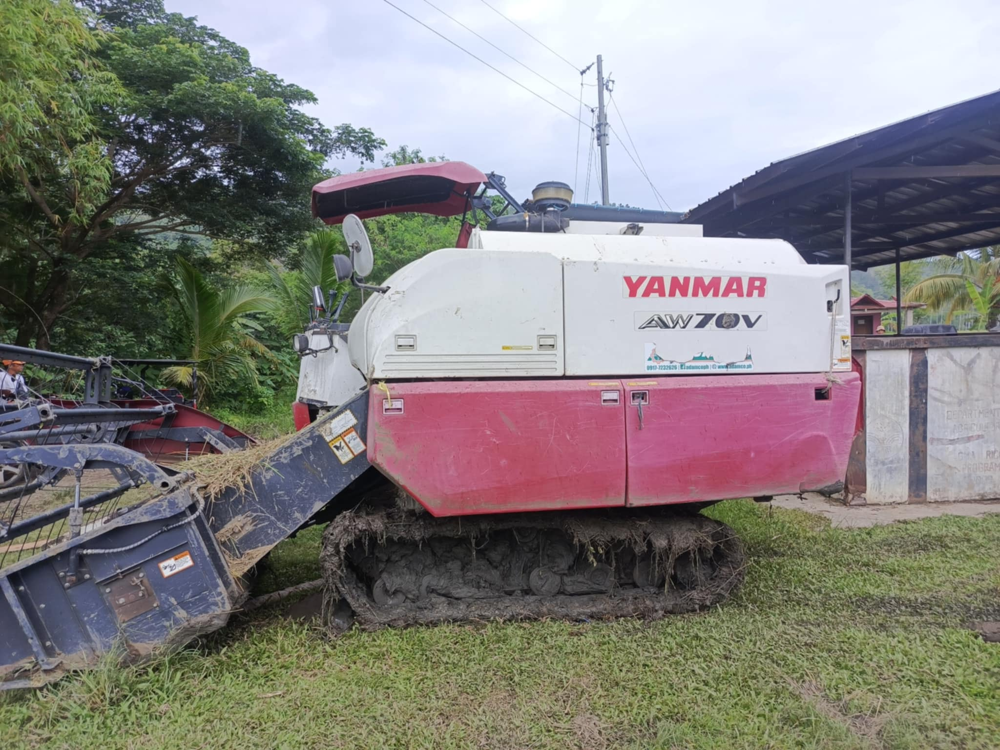

Yanmar AW70V Harvester
This is a picture of a Yanmar AW70V, a rice combine harvester. It helps farmers a lot because it makes the job faster and easier. Instead of harvesting rice by hand, which takes a long time, this machine can cut, separate, and clean the rice in one go. It saves time, effort, and money. Farmers can finish harvesting more quickly, even with just a few workers. This is very helpful, especially during rainy days when they need to finish fast.